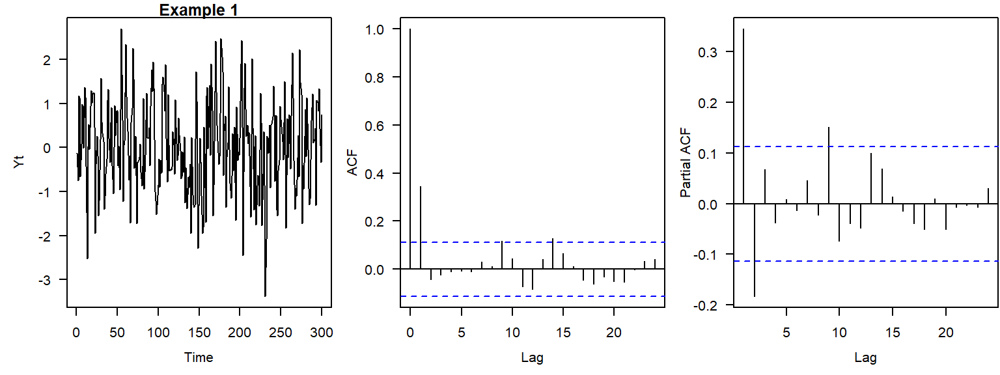
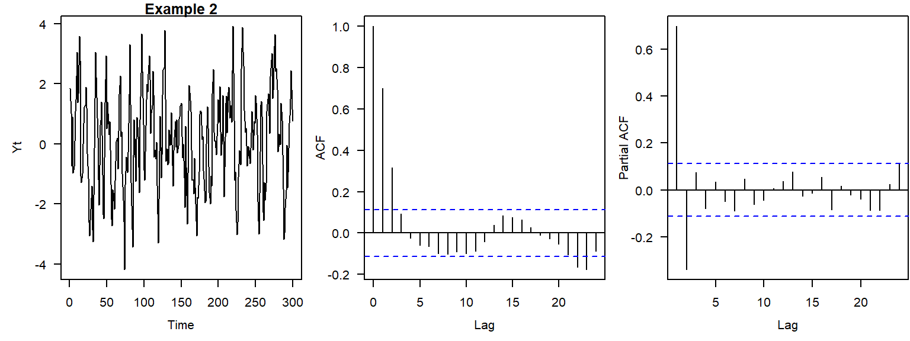
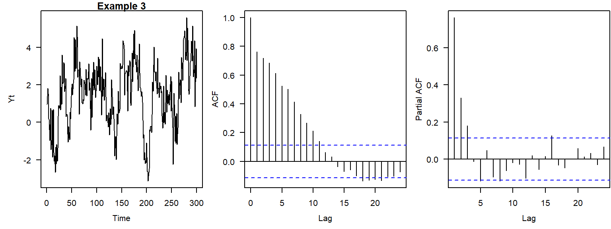
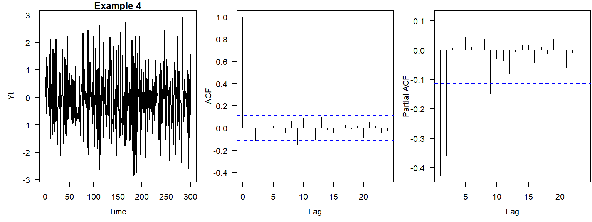
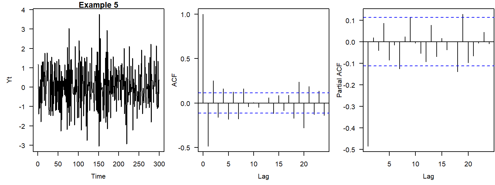
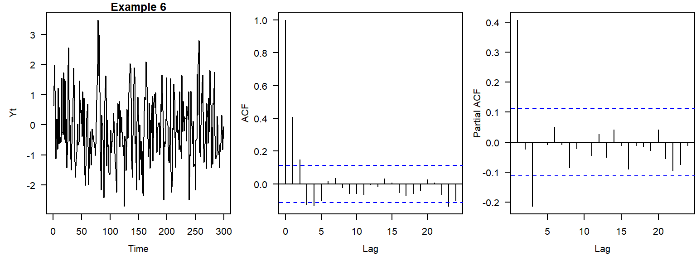
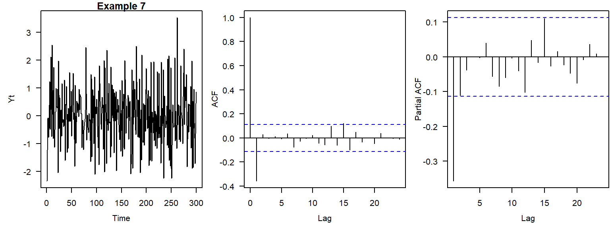
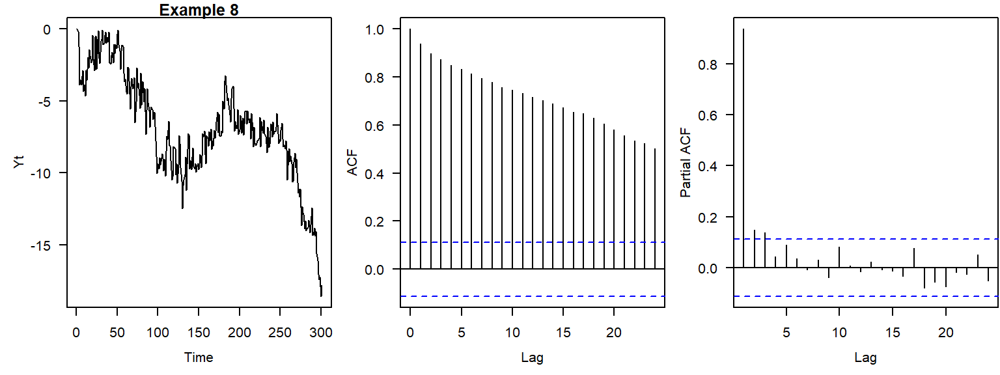
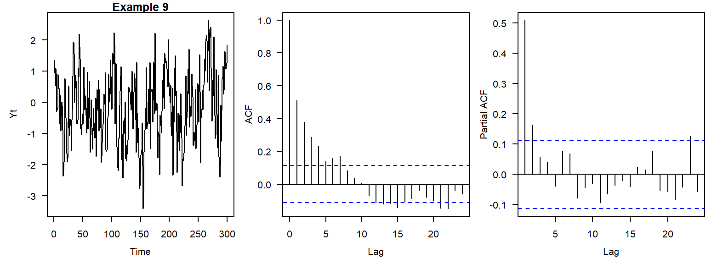
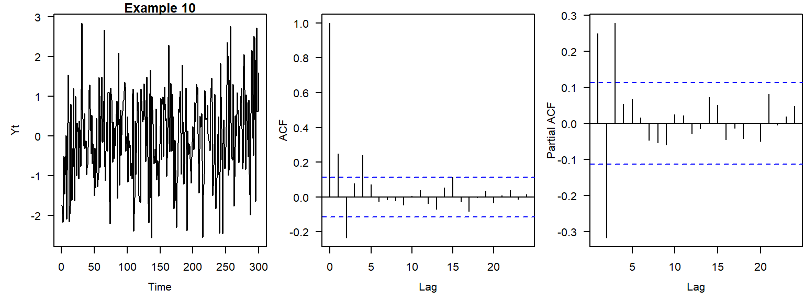

Appendix C — Practice exercises
C.1 ARMA practice
Below are several examples of time series with their ACF and PACF plots. For each example time series, use the plots to decide whether an ARMA(\(p, q\)) model is appropriate, and if so, suggest the orders \(p\) and \(q\). Use Table 4.1 for help.










C.2 Trend practice
Answer whether each of these statements is true or false.
- If ACF values at the first ten lags are statistically significant, then the time series is not stationary.
- If \(X_t\) is an ARIMA\((p,d,q)\) process, then \((1-B)^d X_t\) is an ARMA\((p,q)\) process.
- Slowly decaying ACF is a sign of nonstationarity.
- If a hypothesis \(H_1\) of a linear trend was accepted for the series \(U_t\), \(t = 1, \dots, T\), it will be also accepted for the subsets \(U_{t'}\), where \(t' = j, \dots, k\); \(j<k\), and \(j,k < T\).
- Unit root tests can be applied to determine the appropriate order of differencing \(d\).
- A time series that exhibits a quadratic-looking trend can be made stationary (detrended) using the Box–Cox transformation with the power parameter \(\lambda = 2\).
- ARIMA(0,1,0) model is a random walk.
- For the backshift operator \(B\), \((1-B)^dX_t = (1-B^d)X_t\).
- A linear time trend can be eliminated by differencing the time series once or twice.
- Trend functions (e.g., \(X_t = 0.35 + 0.11t + \epsilon_t\), where \(\epsilon_t\) are uncorrelated errors) express the changes in the process \(X_t\) caused by time.
- Time series should be differenced just enough times to remove a stochastic trend. Differencing too many times causes problems.
- Autocorrelation in observations affects results of the \(t\)-test and Mann–Kendall test.
- The Mann–Kendall test focuses on a more general class of trends than the \(t\)-test does.
- The null hypothesis of the augmented Dickey–Fuller test is no unit root (stationarity).
- ARIMA\((p,d,q)\) is a difference-stationary process.
- Bootstrapping allows us to replicate the finite-sample distribution of the test statistic.
- To detrend a time series, the difference operator should be applied with the same lag(s) at which the sample ACF has statistically significant values.
- One of the correct ways to run regression on the time series \(Y_t\) and \(X_t\) with trends is to detrend these time series before fitting the regression model.
- In practice, it is seldom necessary to go beyond second-order differences for detrending a time series.